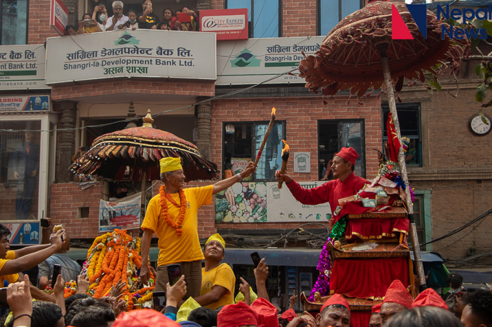
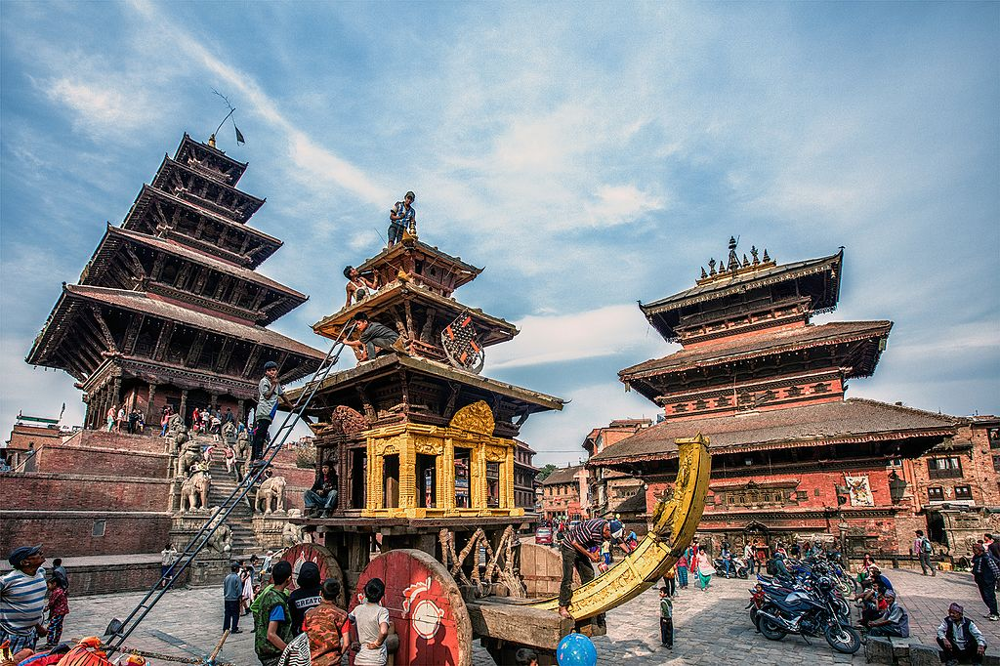
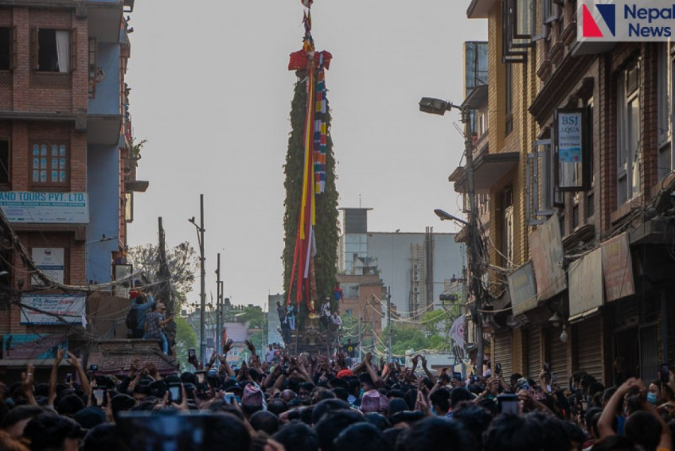

Pahachare Jatra
Pahan Charhe, also known as Pasa Charhe, is one of the greatest religious festivals of the year in Nepal Mandala. Pahan means "guest" and pasa means "friend" in Newari.

Pahan Charhe, also known as Pasa Charhe, is one of the greatest religious festivals of the year in Nepal Mandala. Pahan means "guest" and pasa means "friend" in Newari.

Biska Jatra is one of Bhaktapur’s most popular festivals. The aesthete considers it to be one of the city’s most valued festivals, with both cultural and historical significance.

Rato Machindranath Jatra is a chariot festival which is held in Lalitpur, Nepal. It is one of the greatest religious events in the city and the longest jatra.